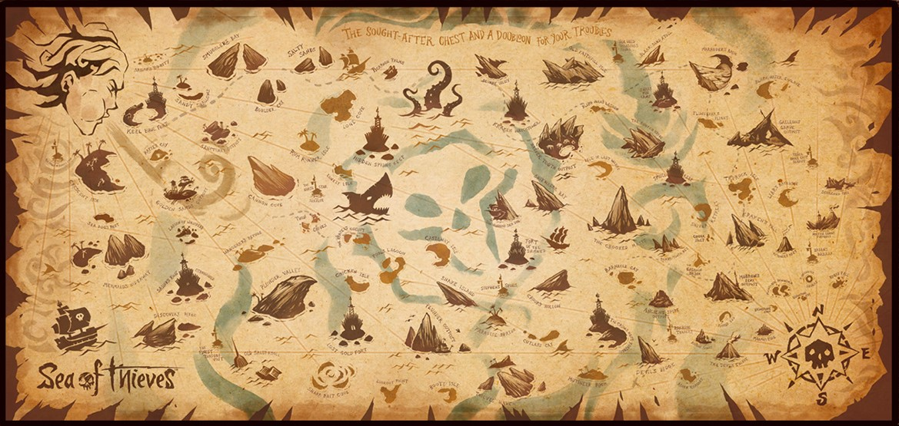

<!DOCTYPE html>
<html lang="en">

<head>
    <meta charset="UTF-8">
    <meta name="viewport" content="width=device-width, initial-scale=1.0">
    <title>Page 2</title>
</head>

<body>
    <header>
        <h1>Welcome to page 2</h1>
        <nav>
            <a href="index.html">Home</a>
            <a href="page2.html">page 2</a>
        </nav>
    </header>
    

    <main>
        <h2>A sea of theives map</h2>
        
        <p>
            The cold front approaching the WC is likely to make landfall tonight, Sunday evening bringing with it further cold
            temperatures to Cape Town, as well as a predicted 2 cm of snow to highest elevations of Table mountain if the
            weather pattern stays on course. The high mountains of Ceres, Matroosberg, Worcester, and potentially well in to
            Franschhoek – should all experience some snow activity Monday morning into Monday afternoon. The snowfall may extend
            further up into the NC with potential snowfall in the Hantamsberg region and Calvinia. Tuesday morning the snowfall
            could very well reach out over the Kouggaberge and Tsitsikamma mountains.More than likely the snowfall will all be
            under 5 cm and at higher elevations, but please send us your photos and snow reports as they happen.
        </p>
        <h3>islands</h3>
    </main>

    <footer>
        <p>&copy; 2024 my website</p>
        <a href="index.html">Go to page 1</a>
    </footer>
</body>

</html>